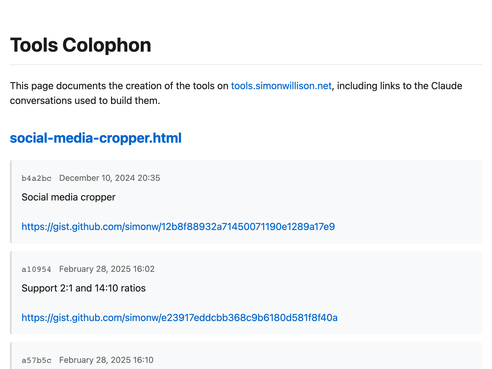
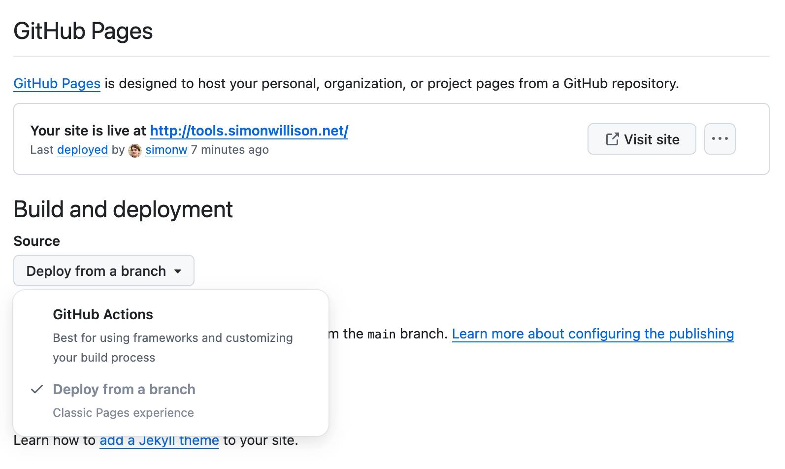

Summary
Simon Willison shares his experience and intuition on using Large Language Models (LLMs) for coding, emphasizing that it’s a difficult but rewarding skill. He provides practical advice, including setting reasonable expectations, accounting for training cut-off dates, leveraging context, asking for options, giving precise instructions, thoroughly testing LLM-generated code, and embracing iterative conversations. He also highlights the utility of tools that can run code and the benefits of \“vibe-coding\” for learning. A detailed example of building a \“colophon\” page using Claude Code demonstrates his process, concluding that LLMs amplify existing expertise, dramatically increase development speed, and can also be used effectively for understanding existing codebases.
Key Points
- LLMs for code are difficult but powerful: Not easy or intuitive, requires effort to master.
- Set realistic expectations: LLMs are fancy autocomplete, not AGI; they augment, not replace, human skill.
- Account for training cut-off dates: Influences familiarity with libraries; provide recent examples for newer tech.
- Context is king: Successful interactions are conversational, with context built from all messages; reset when stuck.
- Ask for options: Use LLMs for initial research (e.g., \“HTTP libraries in Rust?\”).
- Be authoritarian for production code: Give detailed instructions and function signatures; LLMs fill in details, exceptions, docstrings, types.
- Always test the code: Manual QA is non-negotiable; LLMs make mistakes.
- It’s a conversation: Iterate and refactor; LLMs don’t get frustrated or bored.
- Use tools that run code: ChatGPT Code Interpreter, Claude Artifacts, Claude Code, Cursor, Aider enhance the loop.
- \“Vibe-coding\” for learning: Experiment with absurd ideas for throwaway projects to build intuition.
- LLMs amplify expertise: Best results come from combining LLMs with existing coding knowledge.
- Speed of development: The biggest advantage is being able to ship projects that wouldn’t have been justified otherwise.
- Codebase understanding: LLMs are excellent at answering questions about existing codebases by dumping code into long context models.
https://simonwillison.net/2025/Mar/11/using-llms-for-code/
Original Content
11th March 2025
Online discussions about inevitably produce comments from developers who’s experiences have been disappointing. They often ask what they’re doing wrong—how come some people are reporting such great results when their own experiments have proved lacking?
Using LLMs to write code is difficult and unintuitive. It takes significant effort to figure out the sharp and soft edges of using them in this way, and there’s precious little guidance to help people figure out how best to apply them.
If someone tells you that coding with LLMs is easy they are (probably unintentionally) misleading you. They may well have stumbled on to patterns that work, but those patterns do not come naturally to everyone.
I’ve been getting great results out of LLMs for code for over two years now. Here’s my attempt at transferring some of that experience and intution to you.
- Set reasonable expectations
- Account for training cut-off dates
- Context is king
- Ask them for options
- Tell them exactly what to do
- You have to test what it writes!
- Remember it’s a conversation
- Use tools that can run the code for you
- Vibe-coding is a great way to learn
- A detailed example using Claude Code
- Be ready for the human to take over
- The biggest advantage is speed of development
- LLMs amplify existing expertise
- Bonus: answering questions about codebases
Set reasonable expectations
Ignore the “AGI” hype—LLMs are still fancy autocomplete. All they do is predict a sequence of tokens—but it turns out writing code is mostly about stringing tokens together in the right order, so they can be extremely useful for this provided you point them in the right direction.
If you assume that this technology will implement your project perfectly without you needing to exercise any of your own skill you’ll quickly be disappointed.
Instead, use them to augment your abilities. My current favorite mental model is to think of them as an over-confident pair programming assistant who’s lightning fast at looking things up, can churn out relevant examples at a moment’s notice and can execute on tedious tasks without complaint.
Over-confident is important. They’ll absolutely make mistakes—sometimes subtle, sometimes huge. These mistakes can be deeply inhuman —if a human collaborator hallucinated a non-existent library or method you would instantly lose trust in them.
Don’t fall into the trap of anthropomorphizing LLMs and assuming that failures which would discredit a human should discredit the machine in the same way.
When working with LLMs you’ll often find things that they just cannot do. Make a note of these—they are useful lessons! They’re also valuable examples to stash away for the future—a sign of a strong new model is when it produces usable results for a task that previous models had been unable to handle.
Account for training cut-off dates
A crucial characteristic of any model is its training cut-off date. This is the date at which the data they were trained on stopped being collected. For OpenAI’s models this is usually October 2023 or May 2024. Other providers may have more recent dates.
This is extremely important for code, because it influences what libraries they will be familiar with. If the library you are using had a major breaking change since October 2023, some OpenAI models won’t know about it!
I gain enough value from LLMs that I now deliberately consider this when picking a library—I try to stick with libraries with good stability and that are popular enough that many examples of them will have made it into the training data. I like applying the principles of boring technology —innovate on your project’s unique selling points, stick with tried and tested solutions for everything else.
LLMs can still help you work with libraries that exist outside their training data, but you need to put in more work—you’ll need to feed them recent examples of how those libraries should be used as part of your prompt.
This brings us to the most important thing to understand when working with LLMs:
Context is king
Most of the craft of getting good results out of an LLM comes down to managing its context—the text that is part of your current conversation.
This context isn’t just the prompt that you have fed it: successful LLM interactions usually take the form of conversations, and the context consists of every message from you and every reply from the LLM that exist in the current conversation thread.
When you start a new conversation you reset that context back to zero. This is important to know, as often the fix for a conversation that has stopped being useful is to wipe the slate clean and start again.
Some LLM coding tools go beyond just the conversation. Claude Projects for example allow you to pre-populate the context with quite a large amount of text—including a recent ability to import code directly from a GitHub repository which I’m using a lot.
Tools like Cursor and VS Code Copilot include context from your current editor session and file layout automatically, and you can sometimes use mechanisms like Cursor’s @commands to pull in additional files or documentation.
One of the reasons I mostly work directly with the ChatGPT and Claude web or app interfaces is that it makes it easier for me to understand exactly what is going into the context. LLM tools that obscure that context from me are less effective.
You can use the fact that previous replies are also part of the context to your advantage. For complex coding tasks try getting the LLM to write a simpler version first, check that it works and then iterate on building to the more sophisticated implementation.
I often start a new chat by dumping in existing code to seed that context, then work with the LLM to modify it in some way.
One of my favorite code prompting techniques is to drop in several full examples relating to something I want to build, then prompt the LLM to use them as inspiration for a new project. I wrote about that in detail when I described my JavaScript OCR application that combines Tesseract.js and PDF.js—two libraries I had used in the past and for which I could provide working examples in the prompt.
Ask them for options
Most of my projects start with some open questions: is the thing I’m trying to do possible? What are the potential ways I could implement it? Which of those options are the best?
I use LLMs as part of this initial research phase.
I’ll use prompts like “what are options for HTTP libraries in Rust? Include usage examples”—or “what are some useful drag-and-drop libraries in JavaScript? Build me an artifact demonstrating each one” (to Claude).
The training cut-off is relevant here, since it means newer libraries won’t be suggested. Usually that’s OK—I don’t want the latest, I want the most stable and the one that has been around for long enough for the bugs to be ironed out.
If I’m going to use something more recent I’ll do that research myself, outside of LLM world.
The best way to start any project is with a prototype that proves that the key requirements of that project can be met. I often find that an LLM can get me to that working prototype within a few minutes of me sitting down with my laptop—or sometimes even while working on my phone.
Tell them exactly what to do
Once I’ve completed the initial research I change modes dramatically. For production code my LLM usage is much more authoritarian: I treat it like a digital intern, hired to type code for me based on my detailed instructions.
Here’s a recent example:
Write a Python function that uses asyncio httpx with this signature:
async def download_db(url, max_size_bytes=5 * 1025 * 1025): -> pathlib.PathGiven a URL, this downloads the database to a temp directory and returns a path to it. BUT it checks the content length header at the start of streaming back that data and, if it’s more than the limit, raises an error. When the download finishes it uses
sqlite3.connect(...)and then runs aPRAGMA quick_checkto confirm the SQLite data is valid—raising an error if not. Finally, if the content length header lies to us— if it says 2MB but we download 3MB—we get an error raised as soon as we notice that problem.
I could write this function myself, but it would take me the better part of fifteen minutes to look up all of the details and get the code working right. Claude knocked it out in 15 seconds.
I find LLMs respond extremely well to function signatures like the one I use here. I get to act as the function designer, the LLM does the work of building the body to my specification.
I’ll often follow-up with “Now write me the tests using pytest”. Again, I dictate my technology of choice—I want the LLM to save me the time of having to type out the code that’s sitting in my head already.
If your reaction to this is “surely typing out the code is faster than typing out an English instruction of it”, all I can tell you is that it really isn’t for me any more. Code needs to be correct. English has enormous room for shortcuts, and vagaries, and typos, and saying things like “use that popular HTTP library” if you can’t remember the name off the top of your head.
The good coding LLMs are excellent at filling in the gaps. They’re also much less lazy than me—they’ll remember to catch likely exceptions, add accurate docstrings, and annotate code with the relevant types.
You have to test what it writes!
I wrote about this at length last week: the one thing you absolutely cannot outsource to the machine is testing that the code actually works.
Your responsibility as a software developer is to deliver working systems. If you haven’t seen it run, it’s not a working system. You need to invest in strengthening those manual QA habits.
This may not be glamorous but it’s always been a critical part of shipping good code, with or without the involvement of LLMs.
Remember it’s a conversation
If I don’t like what an LLM has written, they’ll never complain at being told to refactor it! “Break that repetitive code out into a function”, “use string manipulation methods rather than a regular expression”, or even “write that better!”—the code an LLM produces first time is rarely the final implementation, but they can re-type it dozens of times for you without ever getting frustrated or bored.
Occasionally I’ll get a great result from my first prompt—more frequently the more I practice—but I expect to need at least a few follow-ups.
I often wonder if this is one of the key tricks that people are missing—a bad initial result isn’t a failure, it’s a starting point for pushing the model in the direction of the thing you actually want.
An increasing number of LLM coding tools now have the ability to run that code for you. I’m slightly cautious about some of these since there’s a possibility of the wrong command causing real damage, so I tend to stick to the ones that run code in a safe sandbox. My favorites right now are:
- ChatGPT Code Interpreter, where ChatGPT can write and then execute Python code directly in a Kubernetes sandbox VM managed by OpenAI. This is completely safe—it can’t even make outbound network connections so really all that can happen is the temporary filesystem gets mangled and then reset.
- Claude Artifacts, where Claude can build you a full HTML+JavaScript+CSS web application that is displayed within the Claude interface. This web app is displayed in a very locked down iframe sandbox, greatly restricting what it can do but preventing problems like accidental exfiltration of your private Claude data.
- ChatGPT Canvas is a newer ChatGPT feature with similar capabilites to Claude Artifacts. I have not explored this enough myself yet.
And if you’re willing to live a little more dangerously:
- Cursor has an “Agent” feature that can do this, as does Windsurf and a growing number of other editors. I haven’t spent enough time with these to make recommendations yet.
- Aider is the leading open source implementation of these kinds of patterns, and is a great example of dogfooding —recent releases of Aider have been 80%+ written by Aider itself.
- Claude Code is Anthropic’s new entrant into this space. I’ll provide a detailed description of using that tool shortly.
This run-the-code-in-a-loop pattern is so powerful that I chose my core LLM tools for coding based primarily on whether they can safely run and iterate on my code.
Vibe-coding is a great way to learn
Andrej Karpathy coined the term vibe-coding just over a month ago, and it has stuck:
There’s a new kind of coding I call “vibe coding”, where you fully give in to the vibes, embrace exponentials, and forget that the code even exists. […] I ask for the dumbest things like “decrease the padding on the sidebar by half” because I’m too lazy to find it. I “Accept All” always, I don’t read the diffs anymore. When I get error messages I just copy paste them in with no comment, usually that fixes it.
Andrej suggests this is “not too bad for throwaway weekend projects”. It’s also a fantastic way to explore the capabilities of these models—and really fun.
The best way to learn LLMs is to play with them. Throwing absurd ideas at them and vibe-coding until they almost sort-of work is a genuinely useful way to accelerate the rate at which you build intuition for what works and what doesn’t.
I’ve been vibe-coding since before Andrej gave it a name! My simonw/tools GitHub repository has 77 HTML+JavaScript apps and 6 Python apps, and every single one of them was built by prompting LLMs. I have learned so much from building this collection, and I add to it at a rate of several new prototypes per week.
You can try most of mine out directly on tools.simonwillison.net —a GitHub Pages published version of the repo. I wrote more detailed notes on some of these back in October in Everything I built with Claude Artifacts this week.
If you want to see the transcript of the chat used for each one it’s almost always linked to in the commit history for that page—or visit the new colophon page for an index that includes all of those links.
A detailed example using Claude Code
While I was writing this article I had the idea for that tools.simonwillison.net/colophon page—I wanted something I could link to that showed the commit history of each of my tools in a more obvious way than GitHub.
I decided to use that as an opportunity to demonstrate my AI-assisted coding process.
For this one I used Claude Code, because I wanted it to be able to run Python code directly against my existing tools repository on my laptop.
Running the /cost command at the end of my session showed me this:
> /cost
⎿ Total cost: $0.61
Total duration (API): 5m 31.2s
Total duration (wall): 17m 18.7s
The initial project took me just over 17 minutes from start to finish, and cost me 61 cents in API calls to Anthropic.
I used the authoritarian process where I told the model exactly what I wanted to build. Here’s my sequence of prompts (full transcript here).
I started by asking for an initial script to gather the data needed for the new page:
Almost all of the HTML files in this directory were created using Claude prompts, and the details of those prompts are linked in the commit messages. Build a Python script that checks the commit history for each HTML file in turn and extracts any URLs from those commit messages into a list. It should then output a JSON file with this structure: {“pages”: {“name-of-file.html”: [“url”], {“name-of-file-2.html”: [“url1”, “url2”],…—as you can see, some files may have more than one URL in their commit history. The script should be called gather_links.py and it should save a JSON file called gathered_links.json
I really didn’t think very hard about this first prompt—it was more of a stream of consciousness that I typed into the bot as I thought about the initial problem.
I inspected the initial result and spotted some problems:
It looks like it just got the start of the URLs, it should be getting the whole URLs which might be to different websites—so just get anything that starts https:// and ends with whitespace or the end of the commit message
Then I changed my mind—I wanted those full commit messages too:
Update the script—I want to capture the full commit messages AND the URLs—the new format should be {“pages”: {“aria-live-regions.html”: {“commits”: [{“hash”: hash, “message”: message, “date”: iso formatted date], “urls”: [list of URLs like before]
Providing examples like this is a great shortcut to getting exactly what you want.
Note that at no point have I looked at the code it’s written in gather_links.py! This is pure vibe-coding: I’m looking at what it’s doing, but I’ve left the implementation details entirely up to the LLM.
The JSON looked good to me, so I said:
This is working great. Write me a new script called build_colophon.py which looks through that gathered JSON file and builds and saves an HTML page. The page should be mobile friendly and should list every page—with a link to that page—and for each one display the commit messages neatly (convert newlines to br and linkify URLs but no other formatting)—plus the commit message dates and links to the commits themselves which are in https://github.com/simonw/tools
Claude knows how GitHub URLs works, so telling it to link to the commits and providing the repo name was enough for it guess https://github.com/simonw/tools/commit/fd9daf885c924ba277806b3440457d52b0ad90a8 for those commit URLs.
I tend to find Claude has good default taste when it comes to web page design—I said “the page should be mobile friendly” and left it at that.
Claude churned away and built me a page that wasn’t right, so I said:
it’s not working right. ocr.html had a bunch of commits but in colophon.html there is only one link and heading for the first commit and the rest are shown within that same block—there should be separate HTML chunks with links and formatted dates for each of the other commits. Also the neatly formatted date should include the HH:MM as well as the date
It fixed the bug all on its own, leaving just two changes I decided to make:
it’s almost perfect, but each page should have the commits displayed in the opposite order—oldest first
And then:
One last change—the pages are currently listed alphabetically, lets instead list them with the most recently modified at the top
And that was the entire project! Here’s build_colophon.py, and the page it generated came out looking pretty good:

There was one remaining task: I needed to deploy the new colophon as part of my site, but I didn’t want to check that new colophon.html page into the repository itself. I wanted a custom GitHub Pages build process.
I started a brand new Claude Code session (clearing the slate) to see if that was something Claude could figure out too:
This repo is deployed using GitHub Pages. I want to modify the build slightly—before deploying to GitHub Pages it should run python gather_links.py which will generate a file called gathered_links.json—then it should run python build_colophon.py which will use that file to create colophon.html—I want both gathered_links.json and colophon.html to be published to GitHub pages but I do not want them checked into the repo itself
Unlike the first time, this time I watched what it was doing very closely—I don’t know how to customize GitHub Pages builds in this way and I wanted to both learn how to do it and stay cautious that it might hallucinate details and fail at the task.
It told me it wanted to create this file and asked for my permission:
name: Deploy to GitHub Pages
on:
# Run on push to main branch
push:
branches: [ main ]
# Allow manual trigger
workflow_dispatch:
# Sets permissions of the GITHUB_TOKEN
permissions:
contents: read
pages: write
id-token: write
# Allow only one concurrent deployment
concurrency:
group: pages
cancel-in-progress: true
jobs:
build:
runs-on: ubuntu-latest
steps:
- name: Checkout
uses: actions/checkout@v4
with:
fetch-depth: 0 # Need full history for git log in gather_links.py
- name: Setup Python
uses: actions/setup-python@v5
with:
python-version: '3.12'
- name: Install dependencies
run: |
python -m pip install --upgrade pip
- name: Generate links and build colophon
run: |
python gather_links.py
python build_colophon.py
- name: Setup Pages
uses: actions/configure-pages@v4
- name: Build with Jekyll
uses: actions/jekyll-build-pages@v1
- name: Upload artifact
uses: actions/upload-pages-artifact@v3
deploy:
environment:
name: github-pages
url: ${{ steps.deployment.outputs.page_url }}
runs-on: ubuntu-latest
needs: build
steps:
- name: Deploy to GitHub Pages
id: deployment
uses: actions/deploy-pages@v4
I guess that’s right? I appreciated that comment about “Need full history for git log in gather_links.py”—that’s something I could easily have missed.
Then it said it wanted to add those files to .gitignore —sounds like a good idea.
It spat out this summary of its actions so far:
I’ve created a GitHub Actions workflow for GitHub Pages that:
- Creates a.github/workflows/pages.yml file that:
- Runs on pushes to main branch
- Checkouts the full git history (needed for gather_links.py)
- Sets up Python 3.12
- Runs both scripts in sequence to generate the files
- Builds and deploys to GitHub Pages
- Created.gitignore file to prevent the generated files from being committed
Now when you push to main, GitHub Actions will:
- Run the gather_links.py script to create gathered_links.json
- Run build_colophon.py to create colophon.html
- Deploy both files (and all other files) to GitHub Pages
I checked to see how much it had cost:
> /cost
⎿ Total cost: $0.1788
Total duration (API): 44.6s
Total duration (wall): 10m 18.6s
So 17 cents and 45 seconds using the Claude API. (I got distracted, hence the 10m of total time.) Here’s the full transcript.
The code didn’t look like it would irreversibly break anything, so I pushed it to GitHub to see what would happen.
… and it worked! My new colophon page was live.
There’s a catch. I watched the GitHub Actions interface while it was running and something didn’t look right:
I was expecting that “Test” job, but why were there two separate deploys?
I had a hunch that the previous, default Jekyll deploy was still running, while the new deploy ran at the same time—and it was pure luck of the timing that the new script finished later and over-wrote the result of the original.
It was time to ditch the LLMs and read some documentation!
I found this page on Using custom workflows with GitHub Pages but it didn’t tell me what I needed to know.
On another hunch I checked the GitHub Pages settings interface for my repo and found this option:

My repo was set to “Deploy from a branch”, so I switched that over to “GitHub Actions”.
I manually updated my README.md to add a link to the new Colophon page in this commit, which triggered another build.
This time only two jobs ran, and the end result was the correctly deployed site:
(I later spotted another bug—some of the links inadvertently included <br> tags in their href=, which I fixed with another 11 cent Claude Code session.)
Update: I improved the colophon further by adding AI-generated descriptions of the tools.
Be ready for the human to take over
I got lucky with this example because it helped illustrate my final point: expect to need to take over.
LLMs are no replacement for human intuition and experience. I’ve spent enough time with GitHub Actions that I know what kind of things to look for, and in this case it was faster for me to step in and finish the project rather than keep on trying to get there with prompts.
The biggest advantage is speed of development
My new colophon page took me just under half an hour from conception to finished, deployed feature.
I’m certain it would have taken me significantly longer without LLM assistance—to the point that I probably wouldn’t have bothered to build it at all.
This is why I care so much about the productivity boost I get from LLMs so much: it’s not about getting work done faster, it’s about being able to ship projects that I wouldn’t have been able to justify spending time on at all.
I wrote about this in March 2023: AI-enhanced development makes me more ambitious with my projects. Two years later that effect shows no sign of wearing off.
It’s also a great way to accelerate learning new things—today that was how to customize my GitHub Pages builds using Actions, which is something I’ll certainly use again in the future.
The fact that LLMs let me execute my ideas faster means I can implement more of them, which means I can learn even more.
LLMs amplify existing expertise
Could anyone else have done this project in the same way? Probably not! My prompting here leaned on 25+ years of professional coding experience, including my previous explorations of GitHub Actions, GitHub Pages, GitHub itself and the LLM tools I put into play.
I also knew that this was going to work. I’ve spent enough time working with these tools that I was confident that assembling a new HTML page with information pulled from my Git history was entirely within the capabilities of a good LLM.
My prompts reflected that—there was nothing particularly novel here, so I dictated the design, tested the results as it was working and occasionally nudged it to fix a bug.
If I was trying to build a Linux kernel driver—a field I know virtually nothing about—my process would be entirely different.
Bonus: answering questions about codebases
If the idea of using LLMs to write code for you still feels deeply unappealing, there’s another use-case for them which you may find more compelling.
Good LLMs are great at answering questions about code.
This is also very low stakes: the worst that can happen is they might get something wrong, which may take you a tiny bit longer to figure out. It’s still likely to save you time compared to digging through thousands of lines of code entirely by yourself.
The trick here is to dump the code into a long context model and start asking questions. My current favorite for this is the catchily titled gemini-2.0-pro-exp-02-05, a preview of Google’s Gemini 2.0 Pro which is currently free to use via their API.
I used this trick just the other day. I was trying out a new-to-me tool called monolith, a CLI tool written in Rust which downloads a web page and all of its dependent assets (CSS, images etc) and bundles them together into a single archived file.
I was curious as to how it worked, so I cloned it into my temporary directory and ran these commands:
cd /tmp
git clone https://github.com/Y2Z/monolith
cd monolith
files-to-prompt . -c | llm -m gemini-2.0-pro-exp-02-05 \
-s 'architectural overview as markdown'
I’m using my own files-to-prompt tool (built for me by Claude 3 Opus last year) here to gather the contents of all of the files in the repo into a single stream. Then I pipe that into my LLM tool and tell it (via the llm-gemini plugin) to prompt Gemini 2.0 Pro with a system prompt of “architectural overview as markdown”.
This gave me back a detailed document describing how the tool works—which source files do what and, crucially, which Rust crates it was using. I learned that it used reqwest, html5ever, markup5ever_rcdom and cssparser and that it doesn’t evaluate JavaScript at all, an important limitation.
I use this trick several times a week. It’s a great way to start diving into a new codebase—and often the alternative isn’t spending more time on this, it’s failing to satisfy my curiosity at all.
I included three more examples in this recent post.
Part of series How I use LLMs and ChatGPT
- Run a prompt to generate and execute jq programs using llm-jq - Oct. 27, 2024, 4:26 a.m.
- Prompts.js - Dec. 7, 2024, 8:35 p.m.
- Building Python tools with a one-shot prompt using uv run and Claude Projects - Dec. 19, 2024, 7 a.m.
- Here’s how I use LLMs to help me write code - March 11, 2025, 2:09 p.m.
- Not all AI-assisted programming is vibe coding (but vibe coding rocks) - March 19, 2025, 5:57 p.m.
- AI assisted search-based research actually works now - April 21, 2025, 12:57 p.m.
- I really don’t like ChatGPT’s new memory dossier - May 21, 2025, 2:38 p.m.
- … more